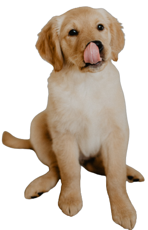
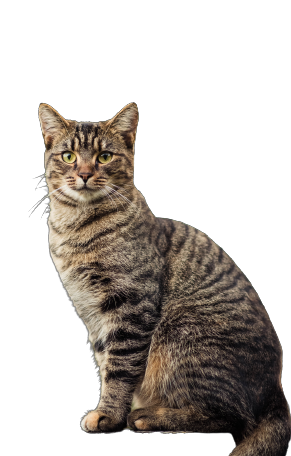
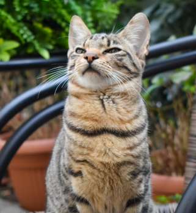
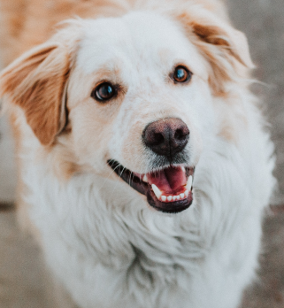
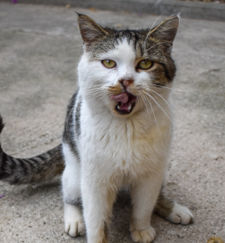

我的主頁
我的主頁
登入
註冊
毛孩相冊
精選文章
寵物討論
領養專區

領養專區
在這裡，遇見無數期待被愛的毛絨寶貝

狗狗
貓咪
小動物
兩棲爬蟲
其他特寵
台北市中正區
萌萌大眼賓士貓，歡迎你成為他的家人
View More
05/24
新北市板橋區
中型幼犬待領養，性格友善親人
View More
05/24
桃園市中壢區
老年狐狸犬，尋找有愛心的家庭
View More
05/24
台中市西區
小米克斯待領養，活潑可愛又聰明
View More
05/23
台南市北區
可愛虎斑貓，希望給他一個溫暖的家
View More
05/22
高雄市鹽埕區
白底虎斑貓，健康已結紮，尋找負責任的主人
View More
05/22
基隆市中正區
聰明親人小黃，尋找一輩子的家人
View More
05/20
新竹市東區
台中可愛兔子開放領養中
View More
05/20
嘉義市西區
可愛搞笑的巴哥犬等待新家
View More
05/19

新北市新店區
4個月母貓送養，親人又愛玩，已經驅蟲接種。
View More
05/19

台南市安南區
5歲公狗送養，守護性強，適合有經驗的狗主人。
View More
05/19

高雄市鼓山區
2歲母貓送養，溫柔親人，已絕育且完成疫苗接種
View More
05/19